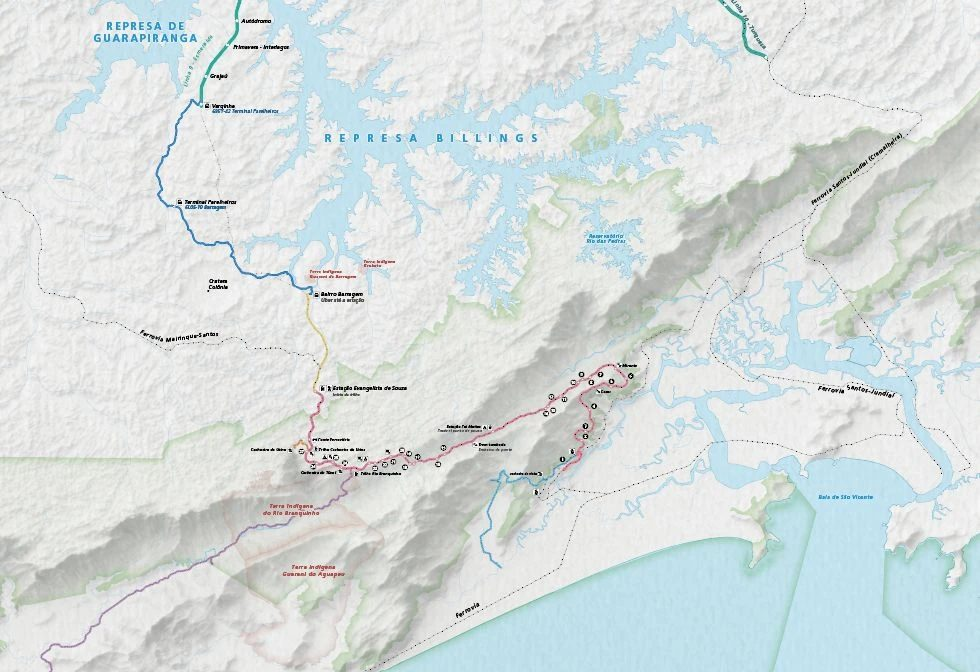
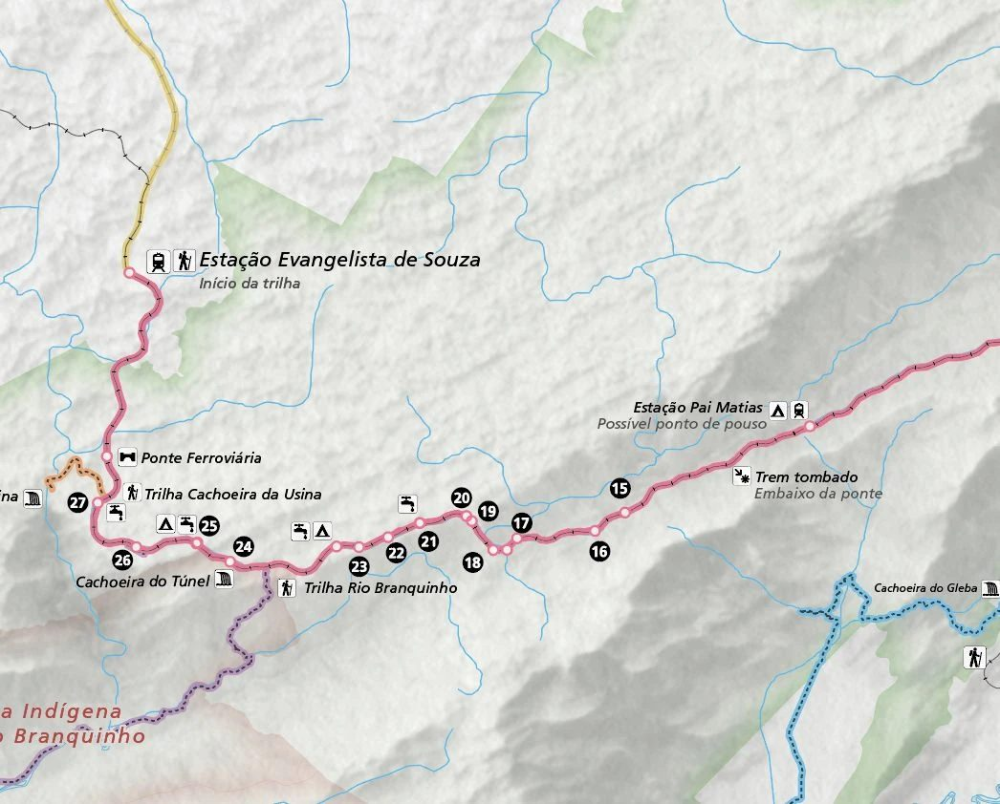
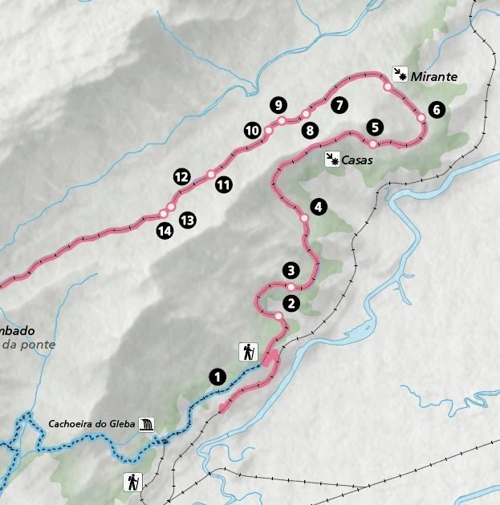
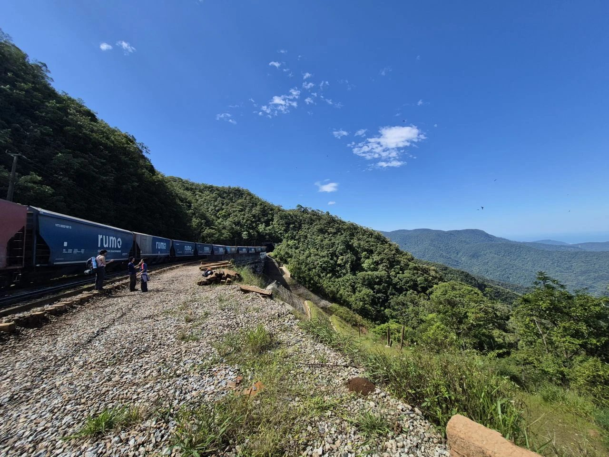
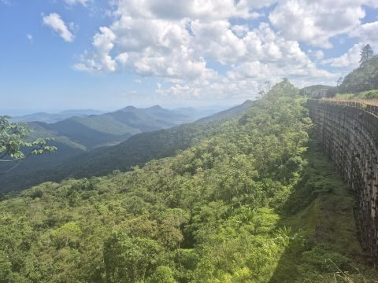

Esse foi o primeiro mapa de trilha que fiz e gostei muito do resultado. Ele retrata uma travessia bem massa que fiz no começo do ano com um grupo de amigos. Saímos de Parelheiros e andamos por 2 dias até chegar na Praia Grande.
O mapa ainda é um rascunho, mas acho que o desfecho está bem animador, de modo que vou incorporar esse tipo de produto no meu portfólio de serviços. Imagino que possa ser bem apelativo para agências de trekking, parques nacionais e ecoturismo no geral.
Ferramentas: QGIS · Inkscape

Geral
Seção 1
Seção 2
Foto 1
Foto 2